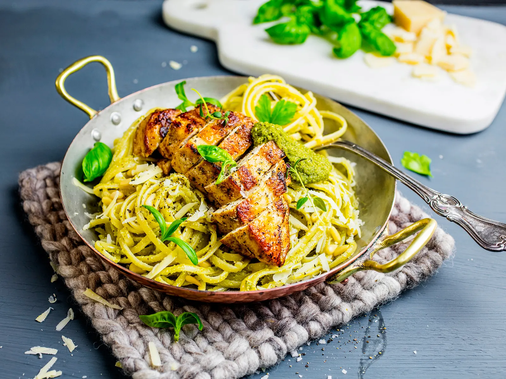

Pesto-Pasta

Description
Recipe for spaghetti with chicken and green pesto, a lovely everyday meal!
Home made pesto and roasted pine nuts makes it extra tasty.
If you want a healthier alternative, use whole grain pasta.
Ingredients
- 600 g chicken
- 400 g spaghetti
Pesto
- 1 pot of fresh basil
- 50 g pine nuts
- 25 g parmesan
- 1,5 dl olive oil
- salt
- pepper
- lemon juice
Steps
- Chicken: Preheat oven to 200 degrees. Fry the chicken, filet or breast, with oil in a pan
until it gets a nice golden color.
- Remove the chicken from the pan and put it in the middle of the oven for about 25 minutes.
- Boil the pasta using the directions from the package.
- Pesto: Mix basil, pine nuts, parmesan, olive oil, salt and pepper in a bowl using an immersion blender.
- Mix the pesto with the pasta and cut the chicken in slices. Put the Chicken over the pasta, and top it with a sprinkle of pine nuts.